Este artigo descreve o procedimento completo para gerar doze mapas temáticos do Brasil, um para cada setor da Matriz de Insumo-Produto (MIP) em seu nível de doze atividades, que sobrepõem duas camadas de informação. A primeira é um choropleth de fundo que representa o potencial de realocação de trabalhadores de cada Unidade da Federação (UF); a segunda é um conjunto de setas posicionadas nas fronteiras entre UFs vizinhas, que representam o fluxo líquido de trabalhadores entre elas para aquele setor. O objetivo é permitir reproduzir os mapas a partir das fontes públicas de dados, concentrando-se na matemática envolvida e deixando a implementação em qualquer linguagem de programação a critério do leitor.
A aplicação descrita é um caso particular de um método mais geral, que depende apenas da existência de tabelas com os dados e da malha cartográfica no nível desejado. O índice geográfico \(r\) não precisa ser a Unidade da Federação: pode ser o município, a região, o país ou o continente; e o índice \(i\) não precisa ser o setor de doze atividades da MIP: pode ser qualquer partição em mais ou menos setores, ou mesmo o nível de produto. As equações das Seções IV e V permanecem válidas trocando-se apenas o conjunto de índices e as tabelas de origem (valor adicionado, subutilização, informais e o parâmetro \(\rho_i\) calculados naquele nível). Os doze mapas aqui apresentados são, portanto, um exemplo de aplicação, e não o limite do método.
A fundamentação teórica do único indicador derivado de elaboração prévia, o índice setorial de excesso ou falta de trabalhadores \(\rho_i\), deve-se a Neves [1], [2], para os quais o leitor é remetido. No procedimento aqui descrito esse índice entra como dado pronto (um valor por setor), de modo que o presente texto não rederiva nem analisa aquele índice, apenas o emprega.
As tabelas de origem são atualizadas periodicamente e publicadas na internet pelos órgãos produtores; portanto, o mesmo conjunto de equações pode ser reexecutado com tabelas mais recentes para regenerar os mapas com dados novos, sem qualquer mudança metodológica.
Os mapas pressupõem a economia de desemprego zero descrita por Neves [1], [2]. Nessa economia, o esforço de trabalho socialmente necessário \(H^{*}\) é o total de horas de trabalho diretas e indiretas (embutidas nos insumos) requerido para produzir toda a cesta de demanda final, calculado como \(H^{*}=\hat{t}^{\top}(I-A)^{-1}y\), em que \(A\) é a matriz de coeficientes técnicos, \(y\) o vetor de demanda final e \(\hat{t}\) o vetor de tempos de trabalho diretos [1, Eqs. (1) e (2)]. Repartindo esse esforço igualitariamente entre todos os aptos ao trabalho \(L\), obtém-se o teto de carga horária, isto é, a jornada média socialmente necessária \(J^{*}=H^{*}/L\) [1, Eq. (3)], fixada como limite legal de trabalho: se todos trabalharem até esse teto, a demanda final é atendida com pleno emprego e sem escassez. A versão setorial do teto, \(J_i^{*}=H_i^{*}/L_i\), comparada ao teto agregado, produz o índice \(\rho_i = J_i^{*}/J^{*} = (H_i^{*}/H^{*})/(L_i/L)\) que os mapas empregam.
Numa economia nessas condições, os trabalhadores hoje fora dos doze setores (desempregados, subutilizados e informais) constituem o contingente a realocar para os setores com falta de trabalhadores, isto é, os de maior \(\rho_i\). O mapa de cada setor torna essa realocação visível no espaço: o fundo mede o potencial de realocação de trabalhadores de cada UF (a fração do contingente nacional de subutilizados e informais que ali reside), e as setas mostram, entre estados vizinhos, para onde esse contingente tenderia a se deslocar para suprir o setor. Do mapa extraem-se três informações de realocação: a prioridade do setor (cor, via \(\rho_i\) contra \(\bar\rho\)); os estados cedentes e receptores (sinal do saldo, definido na Seção IV); e a direção líquida do deslocamento entre vizinhos (sentido das setas).
A MIP brasileira é publicada pelo IBGE num nível de doze atividades, cuja classificação é comum aos dados de valor adicionado das Contas Regionais. A Tabela I lista os doze setores (com o código de dois dígitos usado nos mapas) e, para cada um, o valor do índice \(\rho_i\) para o ano de 2024, transcrito da Tabela II-quinquies de Neves [2].
| Cód. | Setor (atividade, nível 12) | \(\rho_i\) | Classificação |
|---|---|---|---|
| 01 | Agropecuária | 1,616 | Atração (\(\rho_i>\bar{\rho}\)) |
| 02 | Indústrias extrativas | 1,768 | Atração |
| 03 | Indústrias de transformação | 1,603 | Atração |
| 04 | Eletricidade e gás, água, esgoto e resíduos | 1,415 | Atração |
| 05 | Construção | 1,017 | Repulsão (\(\rho_i<\bar{\rho}\)) |
| 06 | Comércio e reparação | 1,440 | Atração |
| 07 | Transporte, armazenagem e correio | 1,340 | Repulsão |
| 08 | Informação e comunicação | 1,231 | Repulsão |
| 09 | Atividades financeiras e seguros | 1,194 | Repulsão |
| 10 | Atividades imobiliárias | 1,211 | Repulsão |
| 11 | Outros serviços | 1,203 | Repulsão |
| 12 | Administração, defesa, educação e saúde públicas | 1,460 | Atração |
O índice \(\rho_i\) é definido por Neves [1, Eq. (8)] como a razão entre a participação do setor no esforço total de trabalho e a sua participação no total de trabalhadores: \[ \rho_i = \frac{H_i^{*}/H^{*}}{L_i/L}, \tag{1} \] em que \(H_i^{*}\) é o esforço de trabalho do setor \(i\), \(H^{*}=\sum_i H_i^{*}\) o esforço total, \(L_i\) a força de trabalho alocada ao setor e \(L\) a força de trabalho total. Um setor com \(\rho_i>1\) contribui com uma fração do esforço maior do que a sua fração de trabalhadores (falta de trabalhadores); com \(\rho_i<1\) ocorre o contrário (excesso). Para o mapa, define-se o limiar de classificação como a média aritmética dos doze índices: \[ \bar{\rho} = \frac{1}{12}\sum_{i=1}^{12}\rho_i \approx 1{,}3748 . \tag{2} \] Adota-se aqui a média simples, e não a média ponderada por trabalhadores, unitária em [1, Eq. (9)], porque cada setor é tratado simetricamente (um mapa por setor). A partição em setores de atração e de repulsão resume-se, assim, aos dois casos:
A partição é exatamente balanceada na média simples: seis setores têm \(\rho_i>\bar{\rho}\) e seis têm \(\rho_i<\bar{\rho}\) (Tabela I).
O índice \(\rho_i\) é, porém, apenas o retrato estático de uma condição dinâmica. Em Neves [1, Seção II.E], define-se o gap reprodutivo \(e(t)=H(t)-L(t)J(t)\), a defasagem entre o esforço socialmente necessário e a capacidade da força de trabalho sob o teto legal vigente; no plano estático, \(e=0\) é uma identidade, e é nesse caso, \(e(t)=0\), que os doze mapas deste artigo foram produzidos. A versão setorial dessa condição, com os gaps setoriais \(e_i(t)=H_i(t)-L_i(t)J_i(t)\) tais que \(\sum_i e_i(t)=e(t)\), é o problema de controle [1, Eq. (13b)]:
\[ \begin{aligned} \min_{J_i(\cdot)} \int_0^T \Bigl| \sum_{i=1}^{n} \bigl[ t_i(t) \cdot [(I - A(t))^{-1} y(t)]_i - L_i(t) J_i(t) \bigr] \Bigr| \, dt, \\ \text{sujeito a } \frac{1}{L(t)} \sum_{i=1}^{n} L_i(t) J_i(t) \in [J_{\min}, J_{\max}], \quad J_i(t) \ge 0,\; i=1,\dots,n. \end{aligned} \tag*{(13b)} \]Nela, cada \(H_i(t)=t_i(t)[(I-A(t))^{-1}y(t)]_i\) depende de toda a matriz de Leontief e de todo o vetor de demanda final, e a restrição \(\sum_i L_i(t)=L(t)\) acopla as alocações: minimizar \(|e(t)|\) é uma minimização acoplada entre setores, e não uma soma de minimizações independentes. Como os \(\rho_i\) empregados nos mapas derivam dessas mesmas grandezas (\(H_i^*\), \(L_i\), \(H^*\), \(L\)), as informações que os mapas exibem, para \(e(t)=0\), refletem também a interdependência intersetorial expressa pela Eq. (13b), isto é, as demandas, os tempos de produção e a quantidade de trabalhadores de cada setor.
A Tabela II resume os cinco insumos necessários, o órgão produtor, a publicação de origem, o ano de referência e a grandeza que cada um fornece ao mapa. As referências completas (com os endereços eletrônicos das tabelas) encontram-se na seção de Referências.
| Dado | Fonte (órgão / publicação) | Ano | Fornece ao mapa |
|---|---|---|---|
| VAB setorial por UF, \(VAB_i^r\) | IBGE, Sistema de Contas Regionais: Brasil 2023, Tabela 6 (abas 6.2–6.13), coluna 2022 [3] | 2022 | peso \(w_i^r\) (comprimento/espessura e direção das setas) |
| Subutilização da força de trabalho, \(S_r\) | IBGE, PNAD Contínua, Tabela 4666 (SIDRA) [4] | 2024 | 1ª parcela do potencial de realocação de trabalhadores |
| Trabalhadores informais, \(I_r\) | IBGE, PNAD Contínua, Tabela 8517 (SIDRA) [5] | 4º tri 2024 | 2ª parcela do potencial de realocação de trabalhadores |
| Malha das UFs (shapefile) | IBGE, Malha Municipal 2022, arquivo BR_UF_2022 [6] | 2022 | base cartográfica (polígonos, centroides, fronteiras) |
| Índice setorial \(\rho_i\) | ILAESE, Anuário Estatístico 2025/26, Tabela II-quinquies [7], via [2] | 2024 | classificação do setor (atração/repulsão) |
Como as fontes são atualizadas em calendários distintos, o conjunto de trabalho combina anos diferentes: o VAB de 2022 (mais recente das Contas Regionais), a subutilização e os informais de 2024 (mais recentes da PNAD Contínua) e o \(\rho_i\) de 2024. Nada impede, contudo, que se baixem tabelas mais novas, as três primeiras estão disponíveis em repositórios abertos (SIDRA e o FTP das Contas Regionais), e se recompute tudo com o mesmo encadeamento de equações.
Denota-se por \(i=1,\dots,12\) o setor e por \(r=1,\dots,27\) a UF. Todas as grandezas que alimentam o mapa são, ao final, normalizadas para a escala nacional, de modo que as unidades físicas (reais ou pessoas) se cancelam; o que interessa é a distribuição relativa entre UFs.
Seja \(VAB_i^r\) o valor adicionado bruto do setor \(i\) na UF \(r\), lido da Tabela 6 das Contas Regionais. O peso setorial da UF \(r\) no setor \(i\) é \[ w_i^r = \frac{VAB_i^r}{\sum_{r'} VAB_i^{r'}}, \qquad \sum_r w_i^r = 1 . \tag{3} \] \(w_i^r\) é a participação da UF no VAB nacional do setor \(i\); é a grandeza que, em cada setor, regula as setas de fluxo.
O potencial bruto de realocação de trabalhadores de cada UF é a soma de duas parcelas, a subutilização da força de trabalho \(S_r\) e os trabalhadores informais \(I_r\): \[ B_r = S_r + I_r . \tag{4} \] Normaliza-se pelo total nacional, obtendo-se o potencial de realocação de trabalhadores (fração de 1): \[ P_r = \frac{B_r}{\sum_{r'} B_{r'}}, \qquad \sum_r P_r = 1 . \tag{5} \] \(P_r\) é o valor representado pela cor de fundo (choropleth): quanto maior, mais concentra a UF o estoque nacional de trabalhadores subutilizados e informais, os candidatos a realocação para os setores formais.
Para cada par setor-UF define-se o saldo como a diferença entre o potencial normalizado e o peso setorial: \[ b_i^r = P_r - w_i^r . \tag{6} \] Como \(P_r\) e \(w_i^r\) somam 1 em \(r\), vale \(\sum_r b_i^r = 0\). Interpreta-se \(b_i^r > 0\) como superávit (a UF concentra mais trabalhadores potencialmente disponíveis do que a sua participação no VAB do setor) e \(b_i^r < 0\) como déficit.
Sejam \(A\) e \(B\) duas UFs adjacentes (que compartilham fronteira). O fluxo líquido entre elas, para o setor \(i\), é definido pela diferença dos saldos: \[ \varphi_i^{A \to B} = b_i^A - b_i^B . \tag{7} \] A seta aponta do estado de maior saldo para o de menor saldo: se \(\varphi_i^{A \to B}>0\) (\(b_i^A>b_i^B\)), a seta cruza a fronteira no sentido \(A\to B\); caso contrário, no sentido \(B\to A\). Como \(\varphi\) é uma diferença, quando os saldos têm sinais opostos a diferença equivale à soma das magnitudes e, quando têm o mesmo sinal, à subtração, a seta representa, portanto, o resultado líquido da confrontação oferta \(\times\) demanda entre os dois vizinhos.
Para que setores com forte concentração (por exemplo, um único estado com quase todo o VAB) não esmaguem as demais setas, a magnitude é comprimida por raiz quadrada e normalizada pelo máximo do setor. Seja \(M_i = \max_{A,B} |\varphi_i^{A\to B}|\) o maior fluxo (em módulo) entre fronteiras do setor \(i\). A magnitude visual da seta é \[ \mu_i^{A \to B} = \sqrt{\frac{|\varphi_i^{A \to B}|}{M_i}} . \tag{8} \] Fronteiras com \(\mu < 0{,}30\) são omitidas (fluxo desprezível). O comprimento \(L\) e a espessura \(E\) da seta são funções afins de \(\mu\): \[ L(\mu) = L_{\min} + (L_{\max}-L_{\min})\,\mu, \qquad L_{\min}=0{,}22^\circ,\; L_{\max}=0{,}75^\circ, \tag{9} \] \[ E(\mu) = E_0 + E_1\,\mu, \qquad E_0=1\ \text{px},\; E_1=4\ \text{px}. \tag{10} \] A cor da seta codifica a própria magnitude, reforçando a leitura das diferenças de tamanho. Define-se, para cada setor \(i\), o intervalo de magnitudes das setas efetivamente exibidas, \(\mu_i^{\min}\) e \(\mu_i^{\max}\), e normaliza-se a posição de cada seta nesse intervalo: \[ t_i^{A \to B} = \frac{\mu_i^{A \to B} - \mu_i^{\min}}{\mu_i^{\max} - \mu_i^{\min}}, \tag{11} \] interpolando a cor da seta entre o azul (\(t=0\), menor fluxo) e o vermelho (\(t=1\), maior fluxo), em espaço HSL. Como a normalização é local (por mapa), o contraste entre setas de tamanhos próximos é preservado mesmo quando os fluxos do setor são globalmente pequenos. A cor de fundo é uma escala linear de \(P_r\) entre um tom claro (potencial baixo) e um tom verde-escuro (potencial alto).
A base cartográfica é a malha das 27 UFs do IBGE (BR_UF_2022) [6], em coordenadas geográficas (WGS84). Para cada UF calcula-se o centroide do polígono. A adjacência entre UFs é determinada por um critério geométrico: dois estados são vizinhos quando a interseção da fronteira de um com o polígono do outro forma um segmento de comprimento superior a um limiar mínimo, o que descarta toques por ponto (quinas). Para cada par de vizinhos \(A,B\):
A seta é desenhada como um segmento de reta centrado no ponto de ancoragem, orientado ao longo de \(\pm\mathbf{u}_{AB}\) conforme o sinal de \(\varphi_i^{A\to B}\), com comprimento \(L(\mu)\) e espessura \(E(\mu)\), e um marcador de ponta (cabeça de seta) na extremidade de chegada. Como se trata de uma grade fixa de vizinhos, o conjunto de fronteiras é o mesmo para os doze setores, o que muda entre mapas é apenas o valor, o sentido e a cor das setas. Para a malha brasileira de 27 UFs obtêm-se 51 fronteiras internas.
Cada um dos doze mapas exibe, em fundo, o potencial de realocação de trabalhadores \(P_r\) e, em primeiro plano, as setas de fluxo líquido do setor. A leitura completa de um mapa resume-se aos seguintes elementos.
Fundo (choropleth). A cor de cada UF codifica \(P_r\) (fração do total nacional de subutilizados + informais). Tons claros indicam UFs com pequena fração do potencial nacional; tons verde-escuro indicam UFs que concentram grande fração, isto é, muitos trabalhadores potencialmente disponíveis para realocação. A barra de cores (colorbar) é graduada em porcentagem do total nacional e tem domínio fixo \([0,1]\), igual para os doze mapas, o que permite compará-los diretamente.
Setas. Cada seta assenta sobre uma fronteira entre dois estados vizinhos e resume três informações: (i) a direção aponta do estado de maior saldo para o de menor saldo (do superávit ao déficit de trabalhadores); (ii) o comprimento e a espessura codificam a magnitude normalizada \(\mu\), setas longas e grossas correspondem a grandes fluxos líquidos; (iii) a cor reforça essa magnitude, do azul (menor) ao vermelho (maior), normalizada pelo mínimo e pelo máximo de cada mapa (Seção IV-E). A ausência de seta numa fronteira significa que o fluxo ali ficou abaixo do limiar \(\mu<0{,}30\).
Interpretação 2×2. Cruzando o sinal do saldo \(b_i^r\) com a intensidade do fundo (acima/abaixo da mediana nacional de \(P_r\)), cada UF cai numa de quatro categorias, sintetizadas na Tabela III.
| Fundo escuro (alto \(P_r\)) | Fundo claro (baixo \(P_r\)) | |
|---|---|---|
| Superávit (\(b_i^r\ge 0\)) | forte exportador de trabalhadores | exportador limitado |
| Déficit (\(b_i^r<0\)) | absorve localmente | importador (precisa de trabalhadores) |
As setas de um mapa concentram-se, assim, nas fronteiras entre estados de categorias opostas, e a sua direção revela, para aquele setor, a orientação predominante do fluxo líquido entre os vizinhos.
O encadeamento de equações das Seções IV e V independe da linguagem de programação; qualquer implementação que reproduza (3)–(10) e o critério de adjacência da Seção V gera os mesmos mapas. Uma implementação completa, em Python (bibliotecas Dash e Plotly), está disponível no repositório desempregoZero [8], citado também nas Referências; ela serve de exemplo de aplicação e inclui a leitura automática das tabelas e da malha, a validação dos totais e a exportação das doze figuras.
O artigo apresentou um procedimento autocontido para construir doze mapas de fluxo líquido de trabalhadores entre UFs, um por setor da MIP. O método combina apenas quatro operações elementares: a normalização do valor adicionado por UF (peso \(w_i^r\)), a soma normalizada da subutilização com os informais (potencial \(P_r\)), a diferença entre ambos (saldo \(b_i^r\)) e a diferença dos saldos entre vizinhos (fluxo \(\varphi_i^{A\to B}\)), seguida de uma compressão por raiz quadrada para a codificação visual. Todas as fontes são públicas e atualizadas periodicamente, de modo que o mesmo roteiro pode ser reexecutado com dados novos para regenerar os mapas. O Apêndice a seguir exibe os doze mapas, um por página, como exemplo do resultado.
Os doze mapas interativos, gerados diretamente a partir do procedimento aqui descrito, podem ser visualizados em https://lorranluiz.github.io/desempregoZero/.
Em cada figura, a barra de cores à direita é a mesma para os doze mapas: ela mede o potencial de realocação de trabalhadores \(P_r\) como fração do total nacional, entre 0 (claro) e 1 (verde-escuro). As setas apontam do superávit ao déficit, e o comprimento/espessura é proporcional a \(\mu=\sqrt{|\varphi|/M_i}\), com omissão das fronteiras em que \(\mu<0{,}30\). A cor da seta codifica a magnitude do fluxo, do azul (menor) ao vermelho (maior), normalizada pelo mínimo e pelo máximo de cada mapa (Seção IV-E). O título de cada mapa traz o código e o nome do setor; o par \(\rho_i\) e a classificação (atração/repulsão) estão na Tabela I e são repetidos na legenda de cada figura.
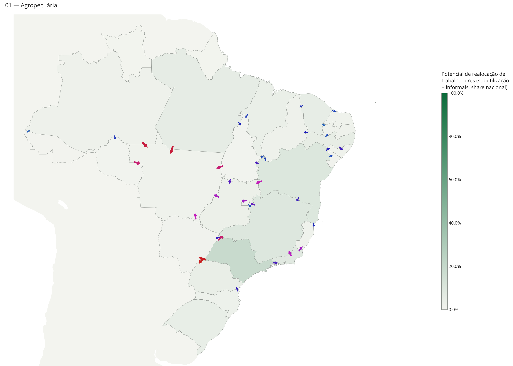
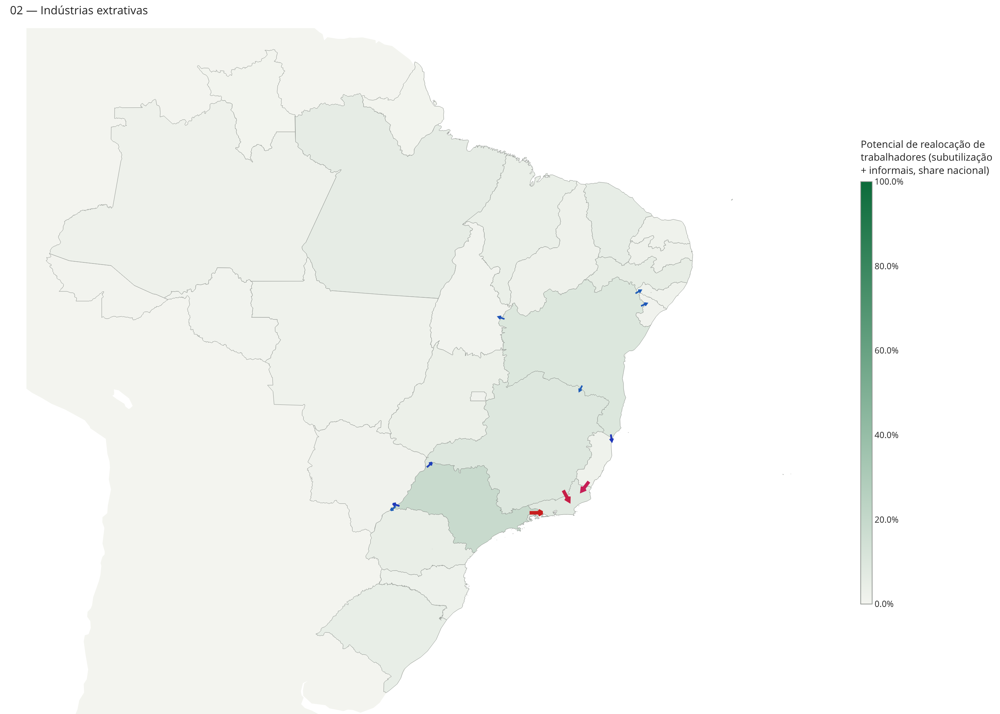
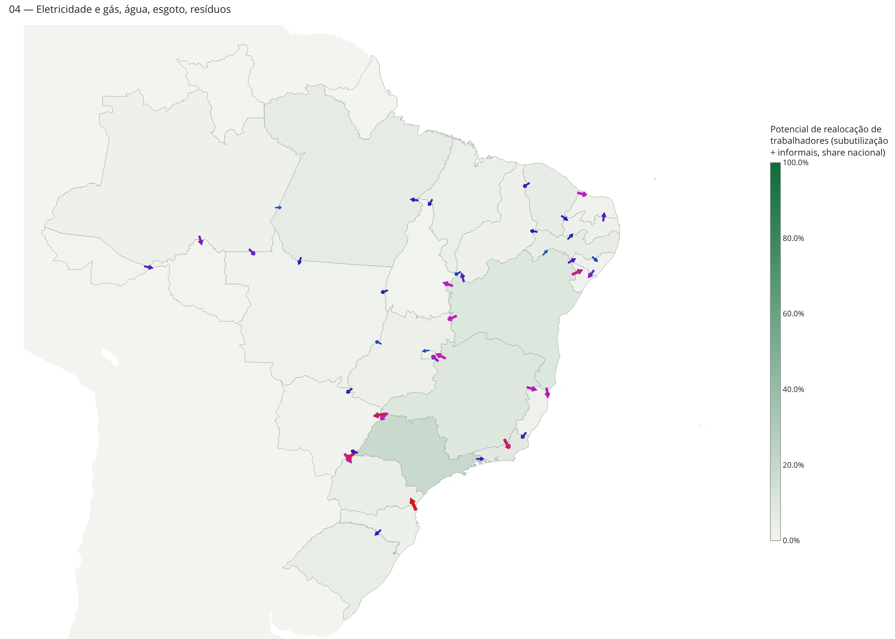
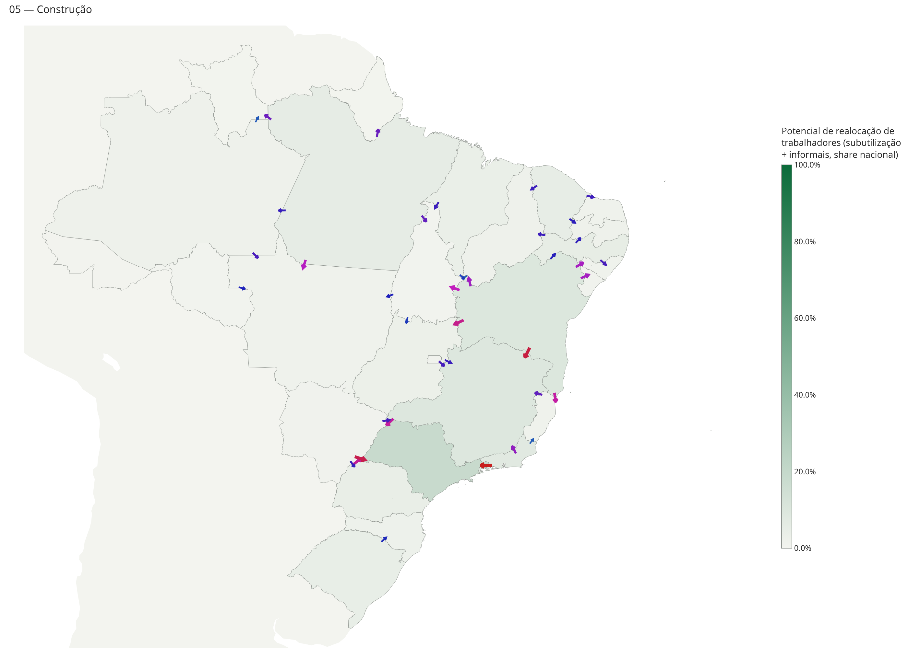
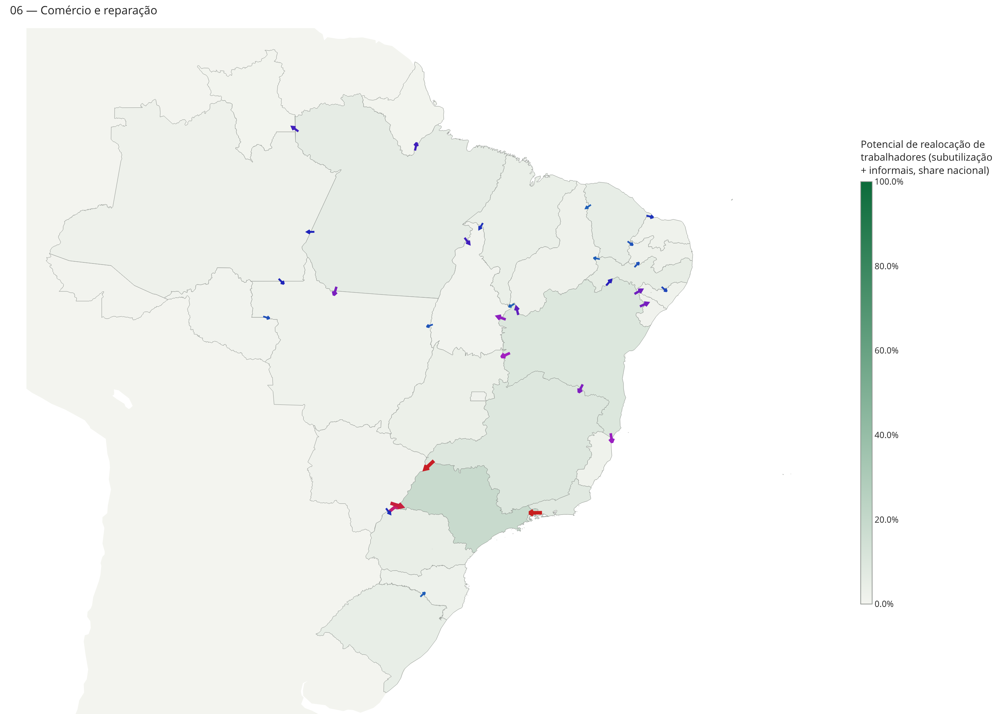
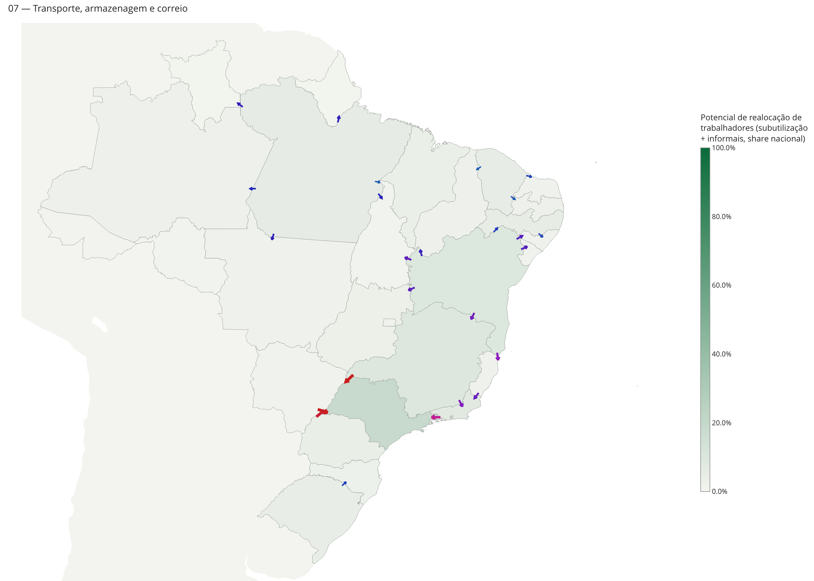
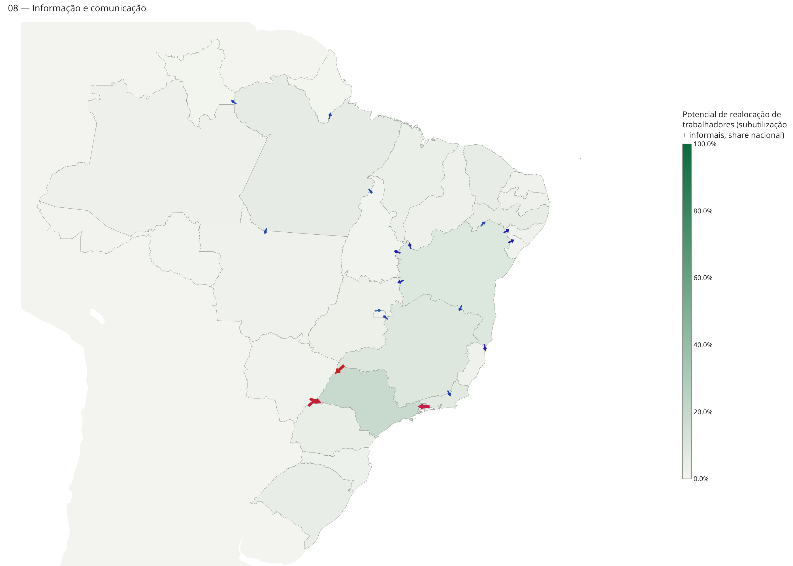
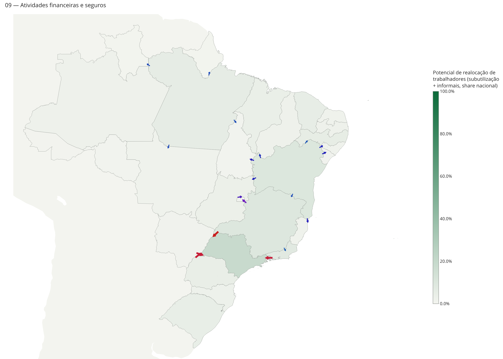
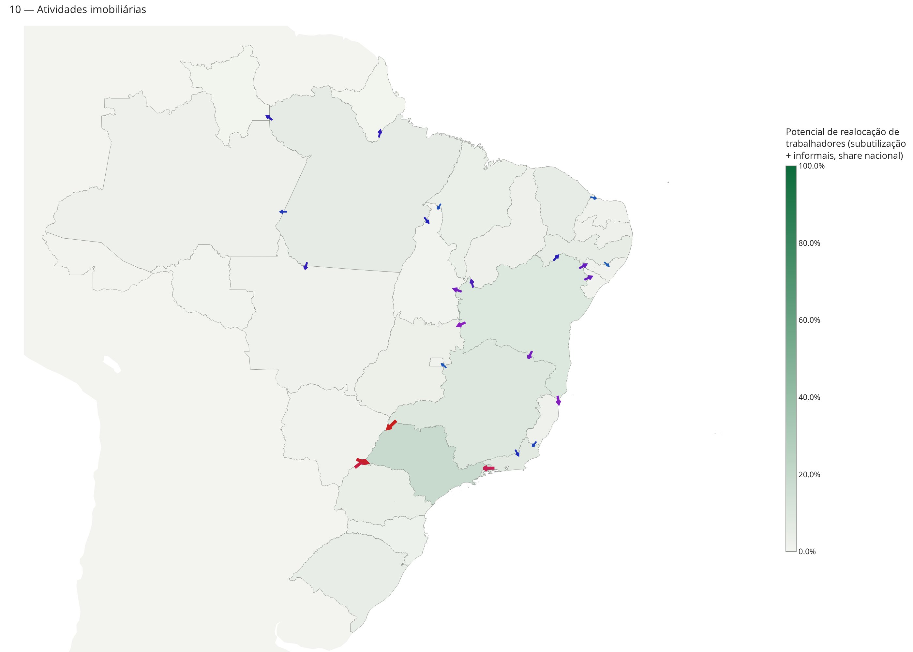
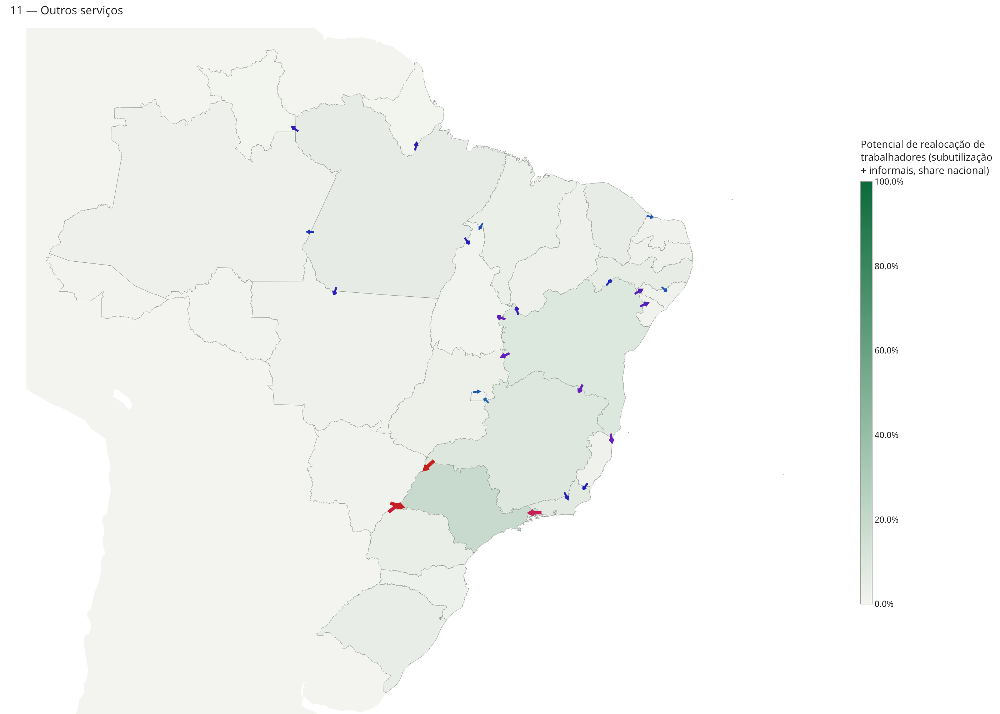
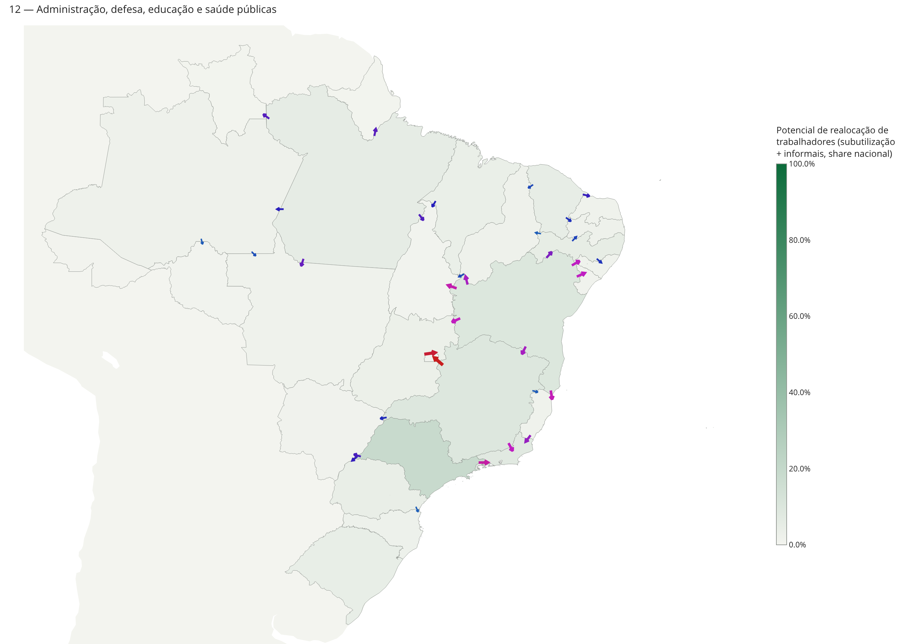